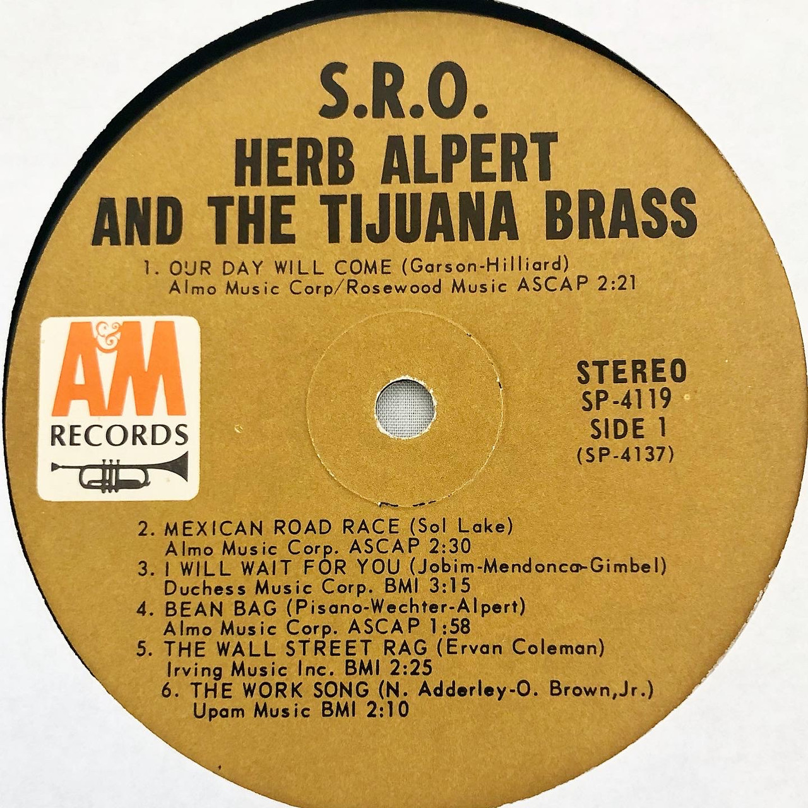
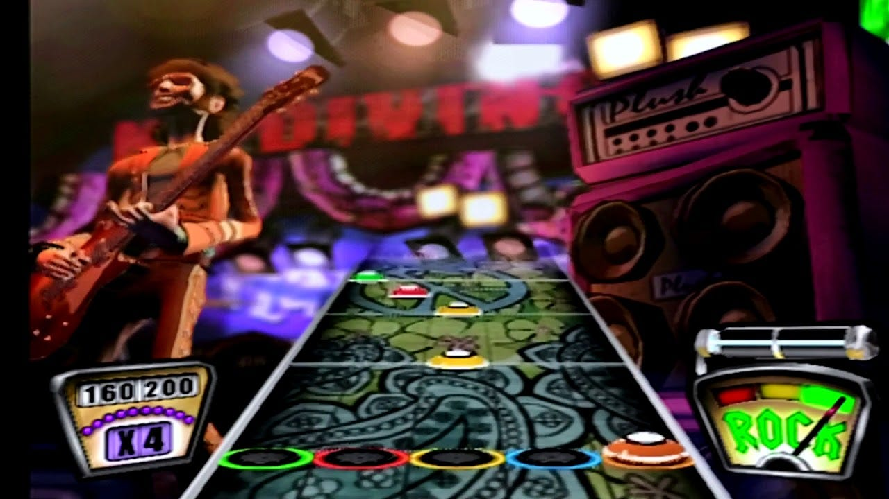

Record Labels of the Past: Half a Century of Influences
(11/11/2022) Jesus Vigil
Ever since culture was formed, humans have used music to add joy to their lives or express emotions.
Before it became the multibillion dollar industry it is today, people were relating with each other through the
spread of traditional music, hymns, or even sea chantys. Once music started selling like hotcakes, it started became more of an artform.
Like films and other forms of media, people wanted to stand out with their sounds and influences by developing new rhythms and practices.
In these modern times (the past hundred years or so), we have been able to capture sounds like never before.
Music at home became more common and made the artform more accessible to audiences that wouldn't have interacted with it. This being said, I went down the A&M records
rabbithole over the past year and was intrigued by it. I bought a random record at a thrift store after purchasing a record player half
impulsively and liked what I heard. I wasn't sure why something so "old" stood out to me until I bought more records and found the label on it.
Now every label with it was a guaranteed good time. I recognized patterns in sounds that I have never heard before through record digging and it
started with this A&M. That thrift shop record I bought was a Herb Alpert record; he is one of the founders of A&M Records.

| Date Released |
Rhythm Game | Rating (Metacritic) |
|---|
| 12/06/1996 | Parappa The Rapper (Playstation) | 67% |
|---|
| 11/21/1998 | Dance Dance Revolution(Arcade) | 90% |
|---|
| 02/16/1999 | Guitar Freaks (Arcade) | 88% |
|---|
| 11/08/2005 | Guitar Hero (Playstation 2) | 91% |
|---|
Rhythm Games: Overtly Terrible or a Certified Hood Classic
(11/10/2022) Jesus Vigil
Nothing gets me more amped up during a gaming session than a good ol' rhythm game. Introduced as early as the 1990s,
people have been tapping to the beat for points and immersing themselves further in a virtual world. Dance Dance Revolution was
the game that took the world by storm and established rhythm in genres of gaming. It turns out, people like pretend dancing when there is
some level of skill involved.
The game that introduced me to the rhythm genre was of course Guitar Hero. A lot of people like to bash on this gaming community
saying things like "If you're trying so hard at something, why not just learn guitar?". You could say the same about DDR but its kind of funny
I'll admit. These two are undoubtably the kings of all the rhythm games with Rockband being, in my opinion, an unofficial successor.
Practicing rhythm, when done right, can extend outside of gaming but keep the player coming back.
Other times, rhythm games are just straight-up terrible. Guitar Hero is no exception as the first two games weren't nearly as appealing
to players due to outdated mechanics and graphics. It was a rocky transition getting that arcade rhythm game feeling at home. There were
a lot of ripoffs and those are usually the bad ones that aren't accurate or on beat with the music in the game. When done right and entire
generation will remember it. Thats Guitar Hero III: A Certified Hood Classic.